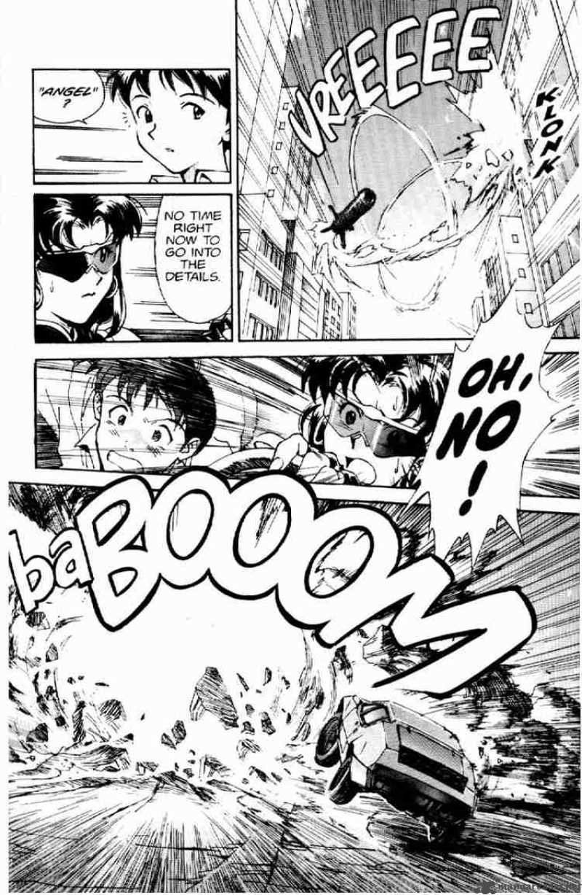

Shin Seiki Evangelion
by Yoshiyuki Sadamoto
Synopsis
In a world devastated by mysterious beings known as Angels, teenager Shinji Ikari is recruited by the secret organization NERV to pilot a giant biomechanical weapon called Evangelion Unit-01. Alongside fellow pilots Rei Ayanami and Asuka Langley, Shinji fights to protect humanity while struggling with loneliness, emotional pain, and the expectations placed upon him. As the battles intensify, dark secrets about the Angels, NERV, and humanity's future begin to emerge.
Chapter 1

Shinji Ikari arrives in Tokyo-3 after receiving a sudden summons from his estranged father, Gendo Ikari. The city is under attack by a mysterious being known as an Angel, and Shinji soon discovers that his father expects him to pilot a powerful Evangelion unit.
Frightened and uncertain, Shinji struggles with the responsibility thrust upon him. As the battle begins, he must confront his fears and decide whether he can face the terrifying enemy threatening humanity.
— End of chapter —